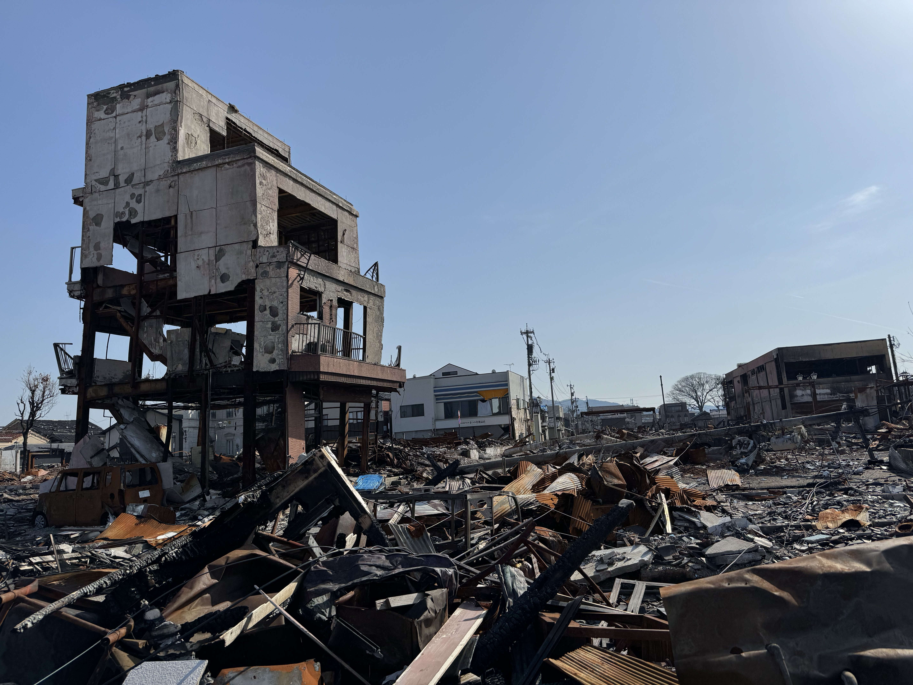
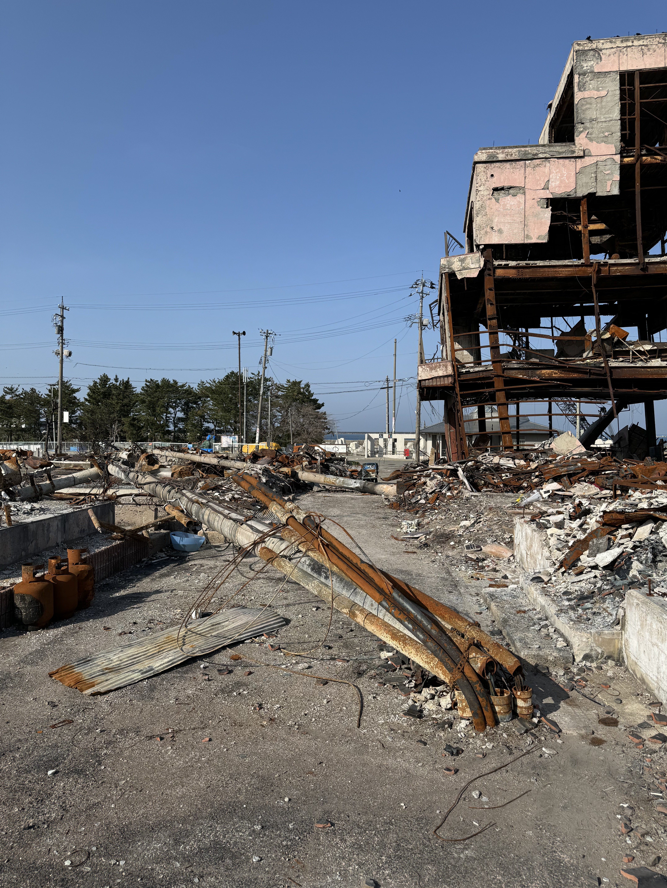
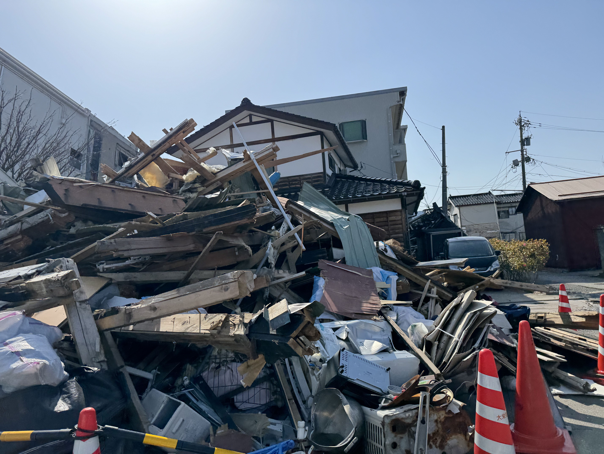
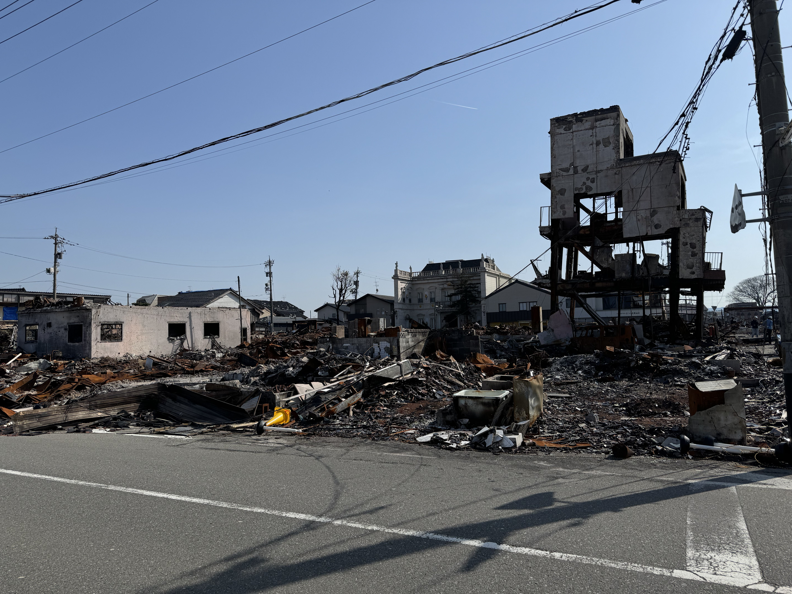
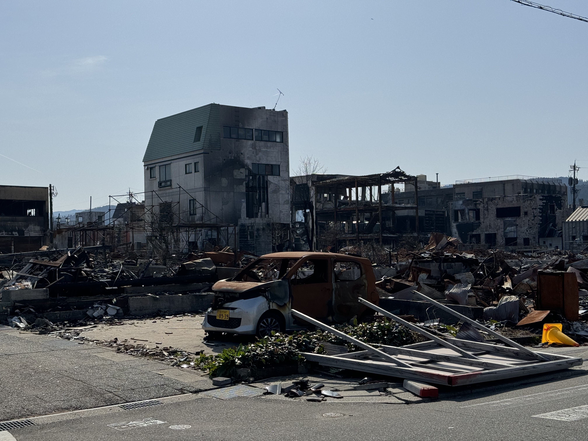

HuMob Challenge 2026
A benchmark challenge for predicting how human mobility recovered after the 2024 Noto Peninsula Earthquake using origin-destination matrix prediction.
The Challenge Dataset Download Data Important Dates
A benchmark challenge for predicting how human mobility recovered after the 2024 Noto Peninsula Earthquake using origin-destination matrix prediction.
The Challenge Dataset Download Data Important DatesThe Human Mobility Prediction Challenge, also known as the HuMob Challenge, is a competition aimed at testing state-of-the-art computational models for predicting human mobility patterns. It follows the success of HuMob Challenge 2023 (Hamburg), HuMob Challenge 2024 (Atlanta), and GISCUP 2025 (Minnesota).
Understanding, modeling, and predicting human mobility in urban and regional areas is an essential task for many domains and applications, including transportation modeling, disaster risk management, emergency response, urban planning, and regional recovery analysis.
Recent advances in large-scale mobility data and computational modeling have enabled researchers to develop increasingly complex human mobility models. However, mobility prediction methods are often trained and tested on different datasets, making it difficult to compare model performance fairly. The HuMob Challenge provides a shared benchmark task and dataset to support reproducible evaluation of human mobility models.
The 2026 challenge focuses on human mobility recovery after the 2024 Noto Peninsula Earthquake in Ishikawa Prefecture, Japan. Participants will estimate how and to what extent human mobility recovered during the post-disaster recovery period.
The task is to predict origin-destination matrices during the test period using the provided training-period OD matrices and publicly accessible contextual information, such as news articles, public reports, and official recovery-related information.
Daily origin-destination matrices representing mobility flows between spatial grid cells in the Noto / Ishikawa study area.
The study area covers the Noto region in Ishikawa Prefecture, Japan, defined by the challenge bounding box.
The region is approximately divided into 2,000-meter grid cells.
The main challenge dataset is aggregated at the daily level.
The challenge is motivated by the severe disruption and long recovery process following the 2024 Noto Peninsula Earthquake. The images below provide visual context for the disaster-affected region and the recovery challenges that shaped post-disaster mobility patterns.





Photos by Kazuto Ataka.
The HuMob Challenge 2026 dataset contains aggregated origin-destination mobility flows for the Noto / Ishikawa study area. The dataset is available on Zenodo.
| Item | Description |
|---|---|
| Filename | humob2026-dataset.tsv |
| Format | TSV with two columns: date in YYYYMMDD format and a Python dictionary storing the OD matrix. |
| Rows | One row per day. The file contains 306 days from November 1, 2023 to January 31, 2024 and from April 1, 2024 to October 31, 2024. |
| OD matrix structure | {origin_grid: {dest_grid: count, ...}, ...} |
| Item | Value |
|---|---|
| Grid ID format | "y_x", where each grid unit is approximately 2 km. |
| x range | 1 to 100 |
| y range | 1 to 70 |
| Longitude range | 136.029 to 138.042, where x=1 corresponds to 136.029 and x=100 corresponds to 138.042. |
| Latitude range | 36.203 to 37.646, where y=1 corresponds to 36.203 and y=70 corresponds to 37.646. |
| Out of bound grid IDs | "-1_-1" |
| Split | Period |
|---|---|
| Training period | November 1, 2023 to January 31, 2024, and April 1, 2024 to October 31, 2024 |
| Test period | February 1, 2024 to March 31, 2024 |
| Excluded test dates | Due to data quality reasons, participants do not need to predict values for 20240202 and 20240305. |
Due to data quality reasons, the following 16 dates were removed and replaced
with NA:
20231126, 20231130, 20231201,
20231203, 20231204, 20231205,
20231214, 20240118, 20240123,
20240124, 20240202, 20240305,
20240408, 20240426, 20240529,
20240708.
The dataset is anonymized using k-anonymity to protect privacy. The k value cannot be disclosed for privacy reasons. The data is also normalized by a constant number for business reasons.
Participants may use the provided training data and publicly accessible external information to predict mobility flows during the test period.
Publicly accessible information, such as news articles, public archives, government reports, and open web resources, may be used.
Other mobility datasets may not be used. Private, internal, proprietary, or non-public datasets are also not allowed.
Participants should document the public information sources used in their approach.
The organizing team will provide a list of suggested public references. Participants may also use other publicly available sources, as long as they comply with the challenge rules.
Submissions will be evaluated by comparing predicted and observed
origin-destination matrices during the test period. The evaluation will be
conducted within the evaluation boundary, defined by grid longitude range
x=30 to x=70 and grid latitude range
y=35 to y=70.
The primary evaluation metric is the Combined Normalized Root Mean Squared Error (Combined NRMSE). The mobility data consist of daily origin-destination (OD) flows on a 2 km grid. OD pairs are evaluated separately as:
Because diagonal flows are approximately ten times larger than off-diagonal flows on average, their raw errors are not directly comparable. The metric therefore normalizes the two components before combining them.
RMSE_diag(d) = sqrt(mean((prediction - observation)²) over diagonal pairs)
RMSE_offdiag(d) = sqrt(mean((prediction - observation)²) over off-diagonal pairs)RMSE_diag = mean(RMSE_diag(d) over days)
RMSE_offdiag = mean(RMSE_offdiag(d) over days)NRMSE_diag = RMSE_diag / mean_actual_diag
NRMSE_offdiag = RMSE_offdiag / mean_actual_offdiag Here, we set mean_actual_diag = 207.6 and mean_actual_offdiag = 19.7.
Combined NRMSE = (NRMSE_diag + NRMSE_offdiag) / 2Normalization ensures that errors in diagonal and off-diagonal flows contribute equally to the final score despite their substantial difference in magnitude. Without normalization, the larger diagonal flows would dominate the evaluation. The mean observed value, rather than the median, is used as the normalization factor because the diagonal-flow distribution is strongly right-skewed; median-based normalization would disproportionately inflate the diagonal NRMSE. Lower Combined NRMSE values indicate better predictive performance.
Baseline results will be provided for comparison. Planned baselines include:
Top performers will be invited to present their work at the HuMob Challenge Workshop @ SIGSPATIAL 2026 held in Riverside, CA, on November 3rd, 2026, and their contributions will be accepted in the Workshop Proceedings.
| Milestone | Date |
|---|---|
| Website launch | June 2026 |
| Dataset release | June 15, 2026 |
| Submission deadline | September 20, 2026 |
| Notification of top teams | September 30, 2026 |
| Workshop / presentation @ SIGSPATIAL 2026 | November 3, 2026 |
Participants should submit predicted OD matrices for all grid cell pairs
during the test period, February 1, 2024 to March 31, 2024, excluding
20240202 and 20240305.
Predictions should be submitted in the same format as the dataset:
one row per day, with a date in YYYYMMDD format and a nested
Python dictionary of OD flows,
{origin_grid: {dest_grid: count, ...}, ...}.
Takahiro Yabe, New York University
Kota Tsubouchi, LY Corporation
Toru Shimizu, LY Corporation
Please contact Taka at takahiroyabe@nyu.edu for any questions.